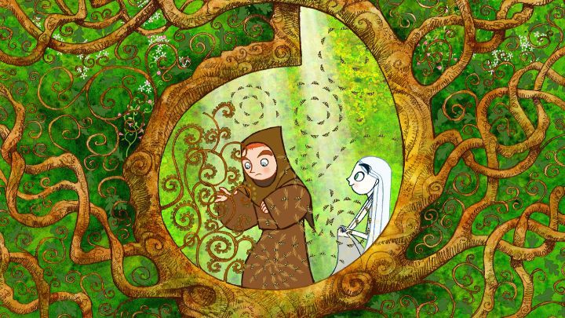

"The Secret of Kells" is the iconic feature film debut of Irish studio Cartoon Saloon, and one of the earliest films from American distributor GKIDS. The movie was successful for both, receiving an Oscar nomination for Best Animated Feature in 2009. Since then, every animated film Cartoon Saloon produced received a nomination, becoming the biggest non-American animation studio outside of Studio Ghibli to be recognized. And GKIDS would continue to grow their collection with the success of "Kells," now having released dozens of international films that might never otherwise be found, and consistently achieiving at least one Oscar nomination every year since 2013. The movie also happens to be one of the rare instances where the USA and Canada received different video distributors: in Canada, it was released by Mongrel Media, DVD only (GKIDS released a Bluray with Cinedigm), and other versions were explicitly banned from Canadian retailers. Aside from the fun facts, "The Secret of Kells" is an instantly distictive and memorable film, steeped heavily in Irish culture and lore in a way no other animated film has. The story is an original folk tale about the making of The Book of Kells, a real book from the 9th century, hand written and illustrated with beautiful ink, and considered a national and historical treasure. The movie shows the Abbey of Kells, holding an international community of monks, building a stone wall to protect themselves against the rumored coming invasion of Vikings. Brendan is a young boy who enjoys working with the monks that create copies of texts by hand, but doing so is against the wishes of Abbot Cellach, his Uncle and master of the town. Before long, a famous master illuminator (writer and illustrator of texts) named Brother Aidan comes to the town, seeking to continue his work on a new fantastic book, but also warning of how he barely escaped the coming Vikings. Aidan takes Brendan under his wing, and slowly they make what would become The Book, just before the inevitable attack.The story has a lot of the expected themes in children's fiction: a disapproving parent, a child's rebellion to follow a passion, growing up to become a master, etc. It separates itself through heavy use of Irish references, which is both one of its' strengths, and its' greatest weakness. Everyone has a cultural background they are proud of, but it's difficult to write that into a story for outside audiences to understand and appreciate. Many of the details of "The Secret of Kells" feel like what a child would write to make the story "more Irish," resulting in plot holes and confusion. For example, Brendan wanders into the woods to collect berries for a special type of ink, and meets Aisling, the shape-shifting fairy of the forest and poster child for the movie. She's a wonderful character, but she never felt like she belonged in the world, becoming an easy excuse to magically help Brendan out of tough situations. Another reference is Crom Cruach, the monster of darkness at the center of the woods. Also, Brother Aiden has a pet white cat named Pangur Ban, with his own role in the story. All of these and more have roots in real Irish mythology, and had I known that history already, I might have loved "The Secret of Kells" more for including them. But as an outsider, it makes it more difficult to appreciate the film to its fullest.  At least the visuals are easy to like. It uses a simple, rounded style for character design, and it fits well with the detailed and stylistic colors in the background. The movie has several camera shots inspired directly by the book it's based on, in the way the 2D backgrounds are framed, and in the way characters move through them. It's not only beautiful, it matches perfectly to its story, a great example of perfect design. Note that there are some moments in its digital animation that have a lot of particle-style movement, making Bluray almost essential to view the film: unfortunately, after having watched both the Canadian DVD and American Bluray release, I can say both suffer due to low bitrate during more intense scenes, a bad oversight.The music and voice acting are also heavily Irish: while sometimes difficult to understand due to the accents or language, the voices feel appreciatively authentic, and at times, lovely. The same can be said for "The Secret of Kells" as a whole: at times, it can be unpenetrable to outside viewers, but is unquestionably a great example of Irish culture, and a great animated film.
- "Ani" More reviews can be found at : https://2danicritic.github.io/ Previous review: review_The_Road_to_El_Dorado Next review: review_The_Secret_of_Nimh